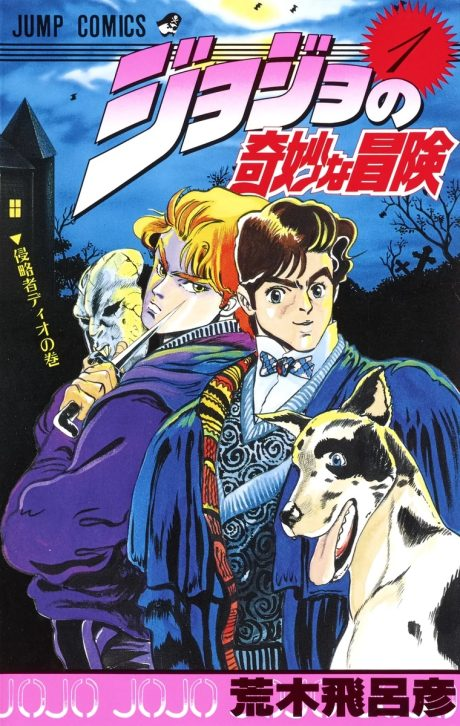

JoJo's Bizarre Adventure
ジョジョの奇妙な冒険 (TV)
After the anime, read the manga from Steel Ball Run chapter 24.
7.7AniList score
—Animeter, no votes yet
195episodes, 9 seasons
Filler
No filler: every episode adapts the manga; Golden Wind's three half-numbered recap specials (126.5, 134.5, 141.5) are left out of the numbering.
Episodes195
Canon195
Filler0
Mixed0